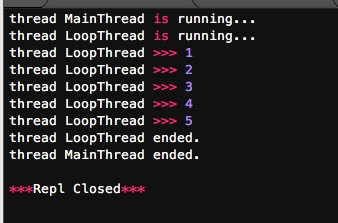
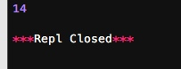

多任务可以由多进程完成，也可以由一个进程内的多线程完成。
我们前面提到了进程是由若干线程组成的，一个进程至少有一个线程。
由于线程是操作系统直接支持的执行单元，因此，高级语言通常都内置多线程的支持，Python也不例外，并且，Python的线程是真正的Posix Thread，而不是模拟出来的线程。
Python的标准库提供了两个模块：thread和threading，thread是低级模块，threading是高级模块，对thread进行了封装。绝大多数情况下，我们只需要使用threading这个高级模块。
启动一个线程就是把一个函数传入并创建Thread实例，然后调用start()开始执行：
# -*- coding: utf-8 -*-
import time,threading
#新线程执行的代码
def loop():
print 'thread %s is running...' % threading.current_thread().name
n = 0
while n<5:
n = n+1
print 'thread %s >>> %s' %(threading.current_thread().name,n)
time.sleep(1)
print 'thread %s ended.' %threading.current_thread().name
print 'thread %s is running...' % threading.current_thread().name
t= threading.Thread(target=loop,name='LoopThread')
t.start()
t.join()
print 'thread %s ended.' % threading.current_thread().name

由于任何进程默认就会启动一个线程，我们把该线程称为主线程，主线程又可以启动新的线程，Python的threading模块有个current_thread()函数，它永远返回当前线程的实例。主线程实例的名字叫MainThread，子线程的名字在创建时指定，我们用LoopThread命名子线程。名字仅仅在打印时用来显示，完全没有其他意义，如果不起名字Python就自动给线程命名为Thread-1，Thread-2……
Lock
多线程和多进程最大的不同在于，多进程中，同一个变量，各自有一份拷贝存在于每个进程中，互不影响，而多线程中，所有变量都由所有线程共享，所以，任何一个变量都可以被任何一个线程修改，因此，线程之间共享数据最大的危险在于多个线程同时改一个变量，把内容给改乱了。
来看看多个线程同时操作一个变量怎么把内容给改乱了：
# -*- coding: utf-8 -*-
import time,threading
# 假定这是你的银行存款:
balance = 0
def change_it(n):
# 先存后取，结果应该为0:
global balance
balance = balance + n
balance = balance - n
def run_thread(n):
for i in range(100000):
change_it(n)
t1 = threading.Thread(target=run_thread, args=(5,))
t2 = threading.Thread(target=run_thread, args=(8,))
t1.start()
t2.start()
t1.join()
t2.join()
print balance

结果为14而不是0
我们定义了一个共享变量balance，初始值为0，并且启动两个线程，先存后取，理论上结果应该为0，但是，由于线程的调度是由操作系统决定的，当t1、t2交替执行时，只要循环次数足够多，balance的结果就不一定是0了。
我们为了得到准确的结果，在某个线程正在修改balance时就要为该线程上一把锁，直到锁释放，其它线程继续执行。创建一个锁就是通过threading.Lock()来实现：
# -*- coding: utf-8 -*-
import time,threading
# 假定这是你的银行存款:
balance = 0
lock=threading.Lock()
def change_it(n):
# 先存后取，结果应该为0:
global balance
balance = balance + n
balance = balance - n
def run_thread(n):
for i in range(100000):
#先获取锁
lock.acquire()
try:
change_it(n)
finally:
# 改完了一定要释放锁:
lock.release()
t1 = threading.Thread(target=run_thread, args=(5,))
t2 = threading.Thread(target=run_thread, args=(8,))
t1.start()
t2.start()
t1.join()
t2.join()
print balance

当多个线程同时执行lock.acquire()时，只有一个线程能成功地获取锁，然后继续执行代码，其他线程就继续等待直到获得锁为止。
获得锁的线程用完后一定要释放锁，否则那些苦苦等待锁的线程将永远等待下去，成为死线程。所以我们用try...finally来确保锁一定会被释放。
小结
多线程编程，模型复杂，容易发生冲突，必须用锁加以隔离，同时，又要小心死锁的发生。
Python解释器由于设计时有GIL全局锁，导致了多线程无法利用多核。多线程的并发在Python中就是一个美丽的梦
Python虽然不能利用多线程实现多核任务，但可以通过多进程实现多核任务。多个Python进程有各自独立的GIL锁，互不影响。